Title Candidates:
Genetic modularity contributes to both the robustness and evolvability of natural genomes by allowing disparate functional components to evolve independently of each other, and allowing for the composition of those components into robust gene regulatory networks [1]. However, the evolutionary origins of biological modularity are not well understood. While modularity of functional components is a commonly recurring motif in biological genomes, it appears to be a costly adaptation, which tends to evolve away under static environmental conditions [2]. Even so, research has show that sexual reproduction appears to increase the level of modularity in digital organisms (linear, self- replicating computer programs), as do changing environments that reward modular tasks in evolving neural networks [2].
Under static environmental conditions, where selective pressures and environmental conditions remain fixed, digital organisms have a strong selective pressure to evolve tightly condensed and efficient genomes that exhibit a high degree of pleiotropy and epistasis. Related functional regions are condensed and overlapped, to achieve the execution of required functions with a minimal set of instructions. However, under changing environments, the balance of selective pressures shifts toward favoring evolvability and adaptability rather than pure efficiency. Our research explores whether these shifting pressures result in dif- ferent genetic architectures than what evolves under static conditions, and whether these architectures are more modular, and indeed more evolvable and robust than their static counterparts.
We used the Avida digital evolution platform to examine the effects of changing environments on the genomes of evolved digital organisms. Digital organisms are circular, self-replicating, and evolving computer programs. Populations of digital organisms are seeded from a single self-replicating ancestor into a 60x60 toroidal world, where the indi- viduals compete with their peers for space to replicate. The organisms that can replicate the fastest come to dominate the environment. In order to replicate faster, the organisms may perform certain rewarded logical operations to increase the speed with which they execute their genomes. They may also shorten and streamline their genomes to reduce the number of instruction executions needed to replicate. The individual genomes are held at a fixed length of 121 instructions, but are mutated after each successful replication event at a rate of 0.00075 point mutation events per site.
We subjected a total of 150 independent populations of digital organisms to two different types of two-phase cyclical changing environments: a benign changing environment, and a hostile changing environment, plus a static (non-changing) environment as a control (fig. 1).
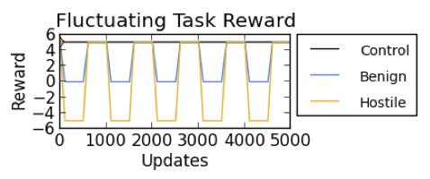
Figure 1: Fluctuating Task Reward in Control, Benign and Hostile Changing Environ- ments.
The benign environmental treatment is characterized by fluctuating reward for per- forming the logical task EQU (the fluctuating task). This reward changes periodically in two phases, from zero reward, to a 25 merit bonus (which represents a multiplier on base organismal fitness of 25), and back to zero. The phases are of equal length, and repeat cyclically throughout the experiment. The organisms are also rewarded continually for performing a different logical task XOR (the backbone task), as a way of encouraging the organisms to preserve sections of their genome through the fluctuating periods, and thus have a basis for comparing the separation or intertwining of functional genetic components. The backbone task is continually rewarded by a 23 merit bonus. Each cycle lasts 1000 updates (roughly 30 generations), and the experiment lasts for 200 cycles per experimental run.
The hostile treatment is identical to the benign treatment except that the reward cycles between a -25 merit bonus (which acts as a strong punishment for performing the task during the off-cycle), and a positive 25 merit bonus.
The static environmental treatment rewards both tasks continuously at 25 (fluctuating task) and 23 (backbone task) merit bonuses.
Our experiments show that digital organisms that evolve in cyclic changing environments differ significantly from those evolved in static environments in a number of key ways.
Organisms evolved in the hostile changing environment have a much longer phylogenetic history than those evolved in static or benign environments. At each environmental shift, adaptive mutations rapidly sweep and fix in the populations. (figs. 2, 3)
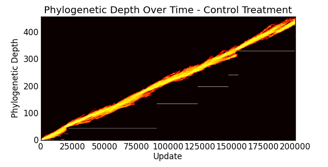
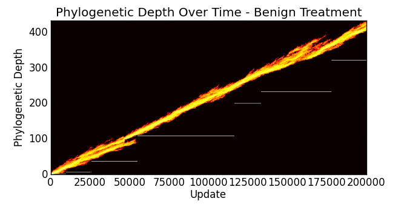
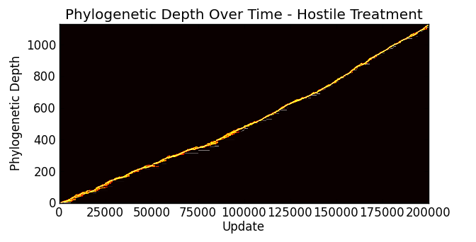
Figure 2: Phylogenetic depth of population evolved in the static (control) environment vs that of hostile-evolved. Sweeps are marked by white horizontal lines. Control-evolved has a maximum depth of 400 ancestors, while hostile-evolved has upward of 1100.
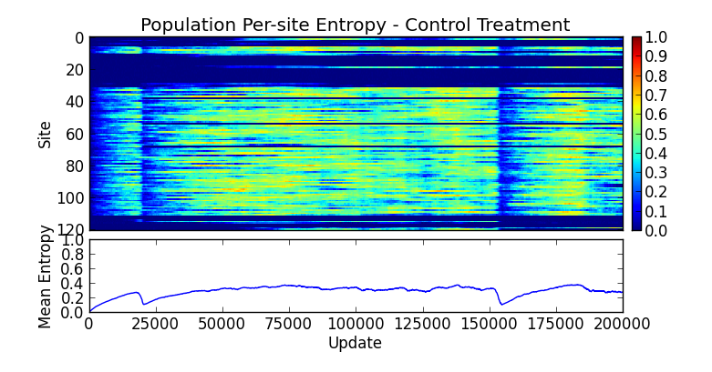
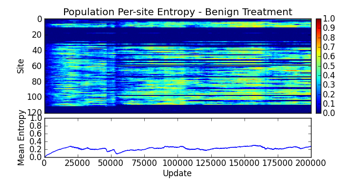
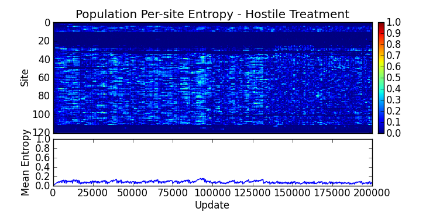
Figure 3: Frequent sweeps resulting from harsh environmental shifts result in very low population and per-site entropy.
These rapid shifts result in qualitatively different architectural styles. Due to the continuous acceptance of adaptive mutations, the genomes evolved under both experimental treatments are much more scattered, with the bulk of the sites responsible for performing the fluctuating task separated from the backbone task, except for a core region of overlap, which represent portions of the tasks that are shared between XOR and EQU. (fig. 4)
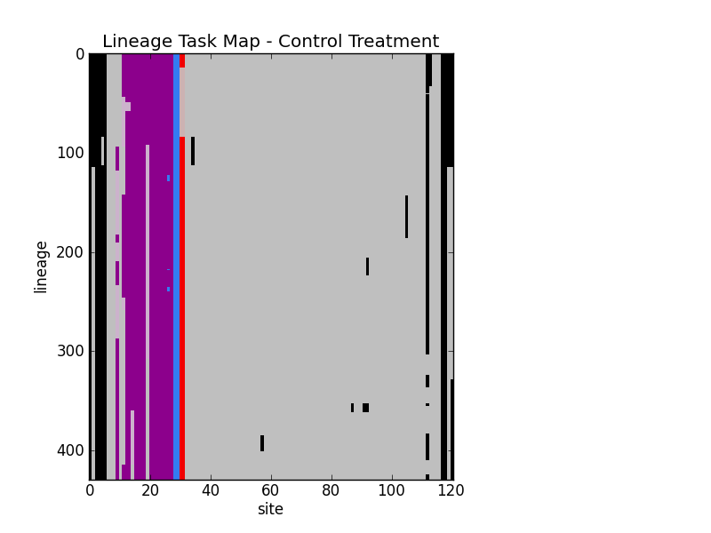
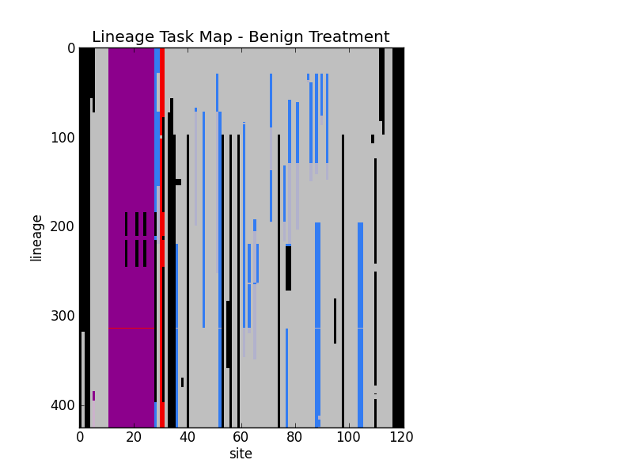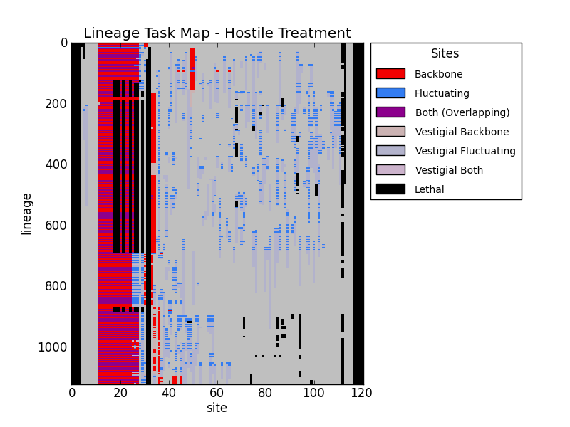
Figure 4: Sites responsible for performing the tasks are marked, as well as vestigial sites, that is, sites that in a previous generation were responsible for performing a task, but were disabled via mutation elsewhere.
Interestingly, the treatment-evolved organisms also show development of a large reservoir of vestigial neutral sites, that is, sites that were previously active in performing a task, but were disabled by a mutation elsewhere. These sites appear to be important for allowing the organisms to quickly adapt to the fluctuations in the environment. (fig. 5)
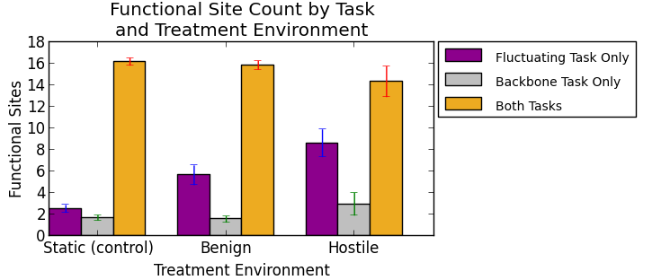
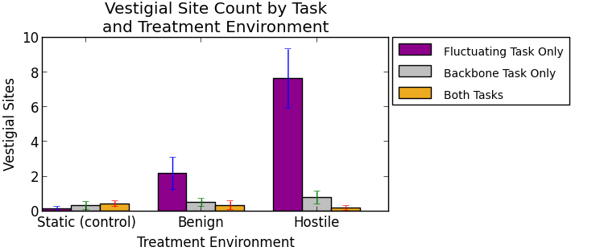
Figure 5: Number of functional vs vestigial sites by treatment. The hostile environment has a much larger number of vestigial sites compared to the benign or control, while having a comparable number of functional sites.
These reservoirs of formerly functional vestigial sites have significantly shifted the treatment-evolved organisms’ location in genotype space such that losing and re-gaining the fluctuating task is much more often within one or two mutational steps. In this way, the organisms have a significant advantage over the controls in short-term evolvability of the fluctuating task. (fig. 6)
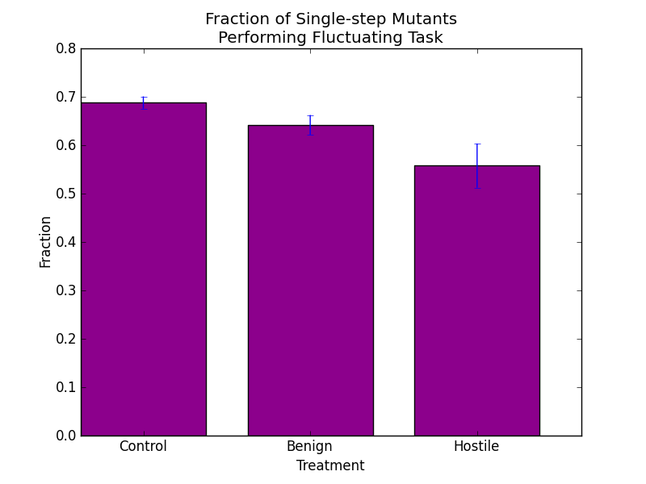
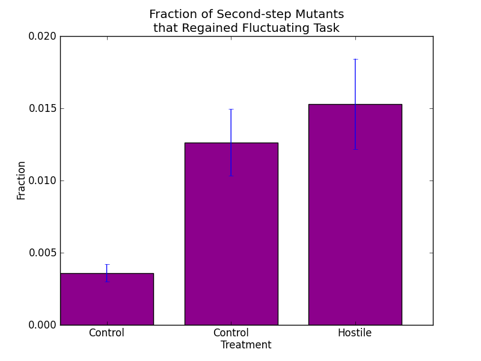
Figure 6: The proportion of mutants that lost or re-gained the task shows the facility with which, in the short-term, the ancestor can adapt to the fluctuating environment.
We conclude that changing environments can indeed produce a kind of functional modularity in digital organisms by separating out unrelated portions of the genome in order to be able to more quickly gain and lose a task. This occurs as a result of the cycles of environmental shift increasing the number of mutations the genomes must accept creating a reservoir of usable neutral mutations. However, it is not clear that this kind of genetic organization is sufficient to produce better long-term evolvability or evolutionary potential.
There are competing theories about the effects of sexual selection on population diversity and evolutionary potential. The Lek paradox suggests that sexual selection should act against population diversity by restricting the effective population to those phenotypes that display the selected trait. This restriction should result in reduced diversity in the trait, thus minimizing both genetic diversity, and reducing the effectiveness of female choice. However, not only is genetic diversity maintained in biological populations, but female choosiness persists. [RoweHoule1996]
There are several potential resolutions to the Lek paradox. First is genic capture, where condition-dependent sexually selected traits capture the genetic variation surrounding improved condition, and thus that variation is included when high-condition individuals reproduce.[RoweHoule1996]
A second possible explanation for the persistence of female choice is selection equilibrium [find the actual name] where only a low percentage of female choice is required to fuel runaway selection toward displaying a sexually trait.[find a reference]
A third possible explanation is that of mutational load, such that mutations are continuously replenishing the diversity of a population.[find the reference. there is one, oddly enough, just gotta find it again.] This diversity creates a fitness gradient that is thus beneficial for mates to select against. (??)
To differentiate between the possibilities, I will set up a series of Avida experiments, with populations of sexual organisms where the females are allowed to choose their mates in the birth chamber based on a condition-dependent trait that the males are allowed to express. I will measure the genetic and phenotypic diversity of the populations over time, in relation to trait expression and female choosiness.
Control: Mates will be assigned randomly, regardless of traits and choosiness.
Genic Capture: Mates will be assigned per female choice. If genetic diversity reduces compared to the control, genic capture can be disqualified.
Runaway Selection Equilibrium: Mates will be assigned per female choice, with a sweep of accuracy percentages. If incidence of the male trait decreases commensurate with reduction in effectiveness of female choice, runaway selection equilibrium can be disqualified. Ugh, when did I write this? I don't know what it means.
Mutational load: As compared to the control, population diversity should not decrease when sexual selection is in effect.
Ok, the loghorhea method.
What did I do:
[1] Hartwell, Leland H., et al. ”From molecular to modular cell biology.” Nature 402 (1999): C47-C52.
[2] Kashtan, Nadav, and Uri Alon. ”Spontaneous evolution of modularity and network motifs.” Proceedings of the National Academy of Sciences of the United States of Amer- ica 102.39 (2005): 13773-13778.
[4] Lenski, Richard E., et al. ”The evolutionary origin of complex features.” Nature 423.6936 (2003): 139-144.
[5] Yin, Yanbin, et al. ”Genomic arrangement of bacterial operons is constrained by bi- ological pathways encoded in the genome.” Proceedings of the National Academy of Sciences 107.14 (2010): 6310-6315.
[6] Deem, Michael W. ”Statistical mechanics of modularity and horizontal gene transfer.” Annu. Rev. Condens. Matter Phys. 4.1 (2013): 287-311.
[7] Muoz, Enrique, Jeong-Man Park, and Michael W. Deem. ”Quasispecies theory for horizontal gene transfer and recombination.” Physical Review E 78.6 (2008): 061921.
We propose to implement HGT within Avida (see Figure 7). As organisms die, their genomes will be accumulate in reservoirs within world-cells. These reservoirs will age- out, with older genomes disappearing from the reservoir as new ones are accumulated. Fragments for uptake will be randomly selected from the reservoir. Two new mutagenic instructions will be created to trigger uptake of fragments. One of the instructions will confer an energy bonus upon uptake, while the other will not. Both instructions will incur a random chance of incorporating the fragment as an insertion into the genome. If the insertion occurs, no energy bonus will be given. The energy bonus level, uptake mutagenic chance, and fragment size will be configurable per experiment. There are two major hypotheses about HGT usage. First, that HGT usage is a random side-effect of grazing for energy sources[ref]. The second is that HGT is an evolved mechanism for increasing evolvability [ref]. We will test these two hypotheses by giving organisms an opportunity use HGT in various contexts that may or may not reward evolvability.
Hypothesis 1: Organisms will uptake gene fragments from the environment at a higher rate if they are useful as an energy source, even if such an uptake increases the chance of mutation. Without an energy bonus, gene fragment uptake will remain at low frequency.
In static environments, evolvability pressures are expected to be low, therefore the pri- mary benefit of gene fragment uptake is expected to be from the energy received. Without this energy bonus, the disruptive effect of integrating random gene fragments into your genome would result in reduced fitness, and thus lower frequency of uptake in the popula- tion.
Hypothesis 2: Organisms will uptake gene fragments from the environment at a higher rate in environments where evolvability is beneficial, such as in changing environments. In static environments, uptake frequency will remain lower.
Hypothesis 2b: In changing environments, organisms will still uptake gene fragments at higher frequencies, even with reduced, or non-existent bonus reward from uptake.
In environments where evolvability pressures are high, such as changing environments, increased mutation rates are selected for, whereas in static environments, high mutation rates are selected against[ref]. HGT-mediated mutations are therefore expected to be selected for in changing environments, vs static environments. Further, in changing envi- ronments, the energy bonus from uptake may not be neccessary to ensure fragment uptake.
We propose to implement HGT within Avida (see Figure 1). As organisms die, their genomes will accumulate in reservoirs. As older genomes are displaced by newer ones, fragments for uptake will be available from the reservoir. We will create three new mutagenic instructions that trigger uptake of these fragments. The first of the instructions, Uptake-HGT-Bonus, will allow an organism to ingest a fragment to metabolize for a fitness bonus, with a chance of recombining it into its genome instead, paralleling an existing theory from the biological literature [3]. The second instruction, Uptake-HGT-noBonus, will allow ingesting the fragment, but not metabolizing, while the third instruction, Uptake-noHGT-Bonus, allows metabolizing the fragment, but no chance for HGT. The magnitude of the fitness bonus, the chance of mutagenic uptake, and the fragment size will be configurable per experiment.
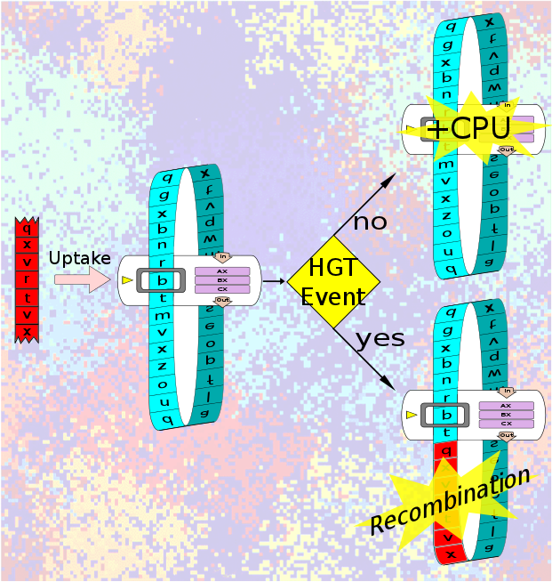
Figure 1: The Process of HGT (TODO - NOT FINAL TEXT)
Our first set of hypotheses examine the some of the environmental conditions that might promote HGT
Hypothesis 1a: Organisms will uptake gene fragments from the environment if they provide a fitness benefit, even if such an uptake has a chance of disrupting their genome.
Hypothesis 1b: Without a fitness benefit, gene fragment uptake will remain at low frequency.
Hypothesis 1c: All else equal, evolved organisms will not risk HGT if an equiv- alent alternative is available.
Many microbes exhibit natural competence, in which DNA is ingested from the environment as a growth medium. DNA is a source of carbon, nitrogen, and phosphorous, as well as many high-energy bonds that can be metabolized. This natural competence comes with a potential cost, in that the DNA may recombine with that of the ingesting organism, thereby disrupting important genes or bring- ing in harmful ones. It is typically assumed that the benefit of foreign DNA as an energetic resource outweighs these costs for the organisms that have evolved natural competence [3].
To test this principle, we will add Uptake-HGT-Bonus to the list of instructions that can result from mutations in Avida, as well as nop-X, a control instruction that does not affect the executing organism or the environment when executed. We will test whether Uptake-HGT-Bonus is used at a higher rate in evolved pop- ulations than nop-X, which would indicate that there is an advantage to using it, rather than it existing at low levels due to mutation alone. Conversely, if an instruction is used significantly less frequently than nop-X, it would indicate an active selective disadvantage associated with that instruction.
We will then replace the Uptake-HGT-Bonus instruction with Uptake-HGT- noBonus, which provides the opportunity for HGT without providing a metabolic benefit to the executing organism. We expect to see a lower rate of use of Uptake-HGT-noBonus than we saw of Uptake-HGT-Bonus, potentially no greater than nop-X. If we find that organisms do use Uptake-HGT-Bonus at greater than nop-X frequency, we will then replace Uptake-HGT-Bonus with Uptake-noHGT-Bonus, which provides CPU cycles but has no chance of causing HGT. We will then com- pare the frequency in evolved genomes of Uptake-noHGT-Bonus to the frequency of Uptake-HGT-Bonus. If Uptake-HGT-Bonus is used more often than Uptake- noHGT-Bonus, that would provide strong evidence that there is an advantage to the HGT component of the instruction independent that of the CPU cycle bonus.
Hypothesis 2: Genomic fragments that contain a complete task in a shorter physical length will be more likely to be incorporated by HGT than fragments that complete a task in a longer physical length. Within evolved Avida populations, the genomic length of a segment used to complete a given task can vary substantially [4]. During recombination, sites that are further apart are more likely to become disassociated from each other than are sites closer together. Because our method of HGT involves recombination of a fragment of a donor genome and the recipient?s genome, we predict that donor genomes that encode a given task in a smaller genomic length will be more likely to be incorporated by HGT. For one, smaller genomic lengths needed for a task mean that a higher proportion of fragments of a given length will contain the complete task. For another, even if a fragment contains an entire task, recombination between a fragment and a host genome does not always occur at the edges of a fragment, and thus a more compact task will be less likely to be disrupted by recombination.
To test this hypothesis, we will perform additional experiments where we seed the fragment reservoirs, rather than letting them fill from the current population. The genome fragments in one set of runs will contain compact tasks, while frag- ments in another set of runs will come from organisms with highly dispersed tasks. We will compare the evolved organisms in these runs to each other and to runs using the previous methodologies where reservoirs were filled with fragments of dead organisms.
Hypothesis 3: Activation of HGT mechanisms will result in evolved genomes with a higher degree of physical modularity than populations without HGT.
Bacterial genomes are strikingly modular. In addition to being compact, with low levels of non-coding DNA, bacterial genomes are typically arranged into oper- ons, where several genes required for a particular function are physically grouped together [5]. This differs from most eukaryotic genomes, where many functions require a series of gene products that are encoded by sites scattered throughout the genome. It has been hypothesized that HGT may cause this modularity, be- cause genomes which happen to have the needed genes for a function grouped physically together will be more likely to spread this grouping to other organisms via HGT than organisms in which the needed genes are more dispersed through the genome [6, 7]. We will test this theory by measuring the physical modularity of genomes from environments with HGT and environments without HGT with the same overall mutation rate.